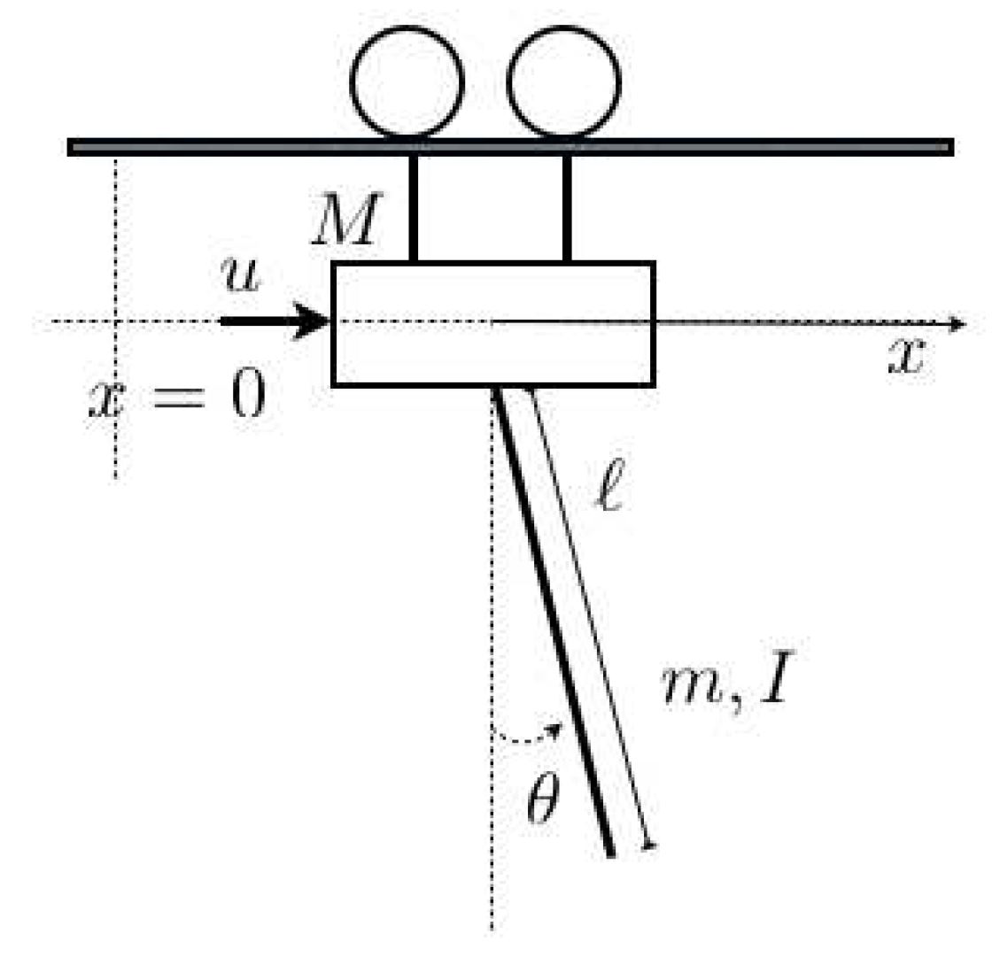

import numpy as np
from scipy import signal
import scipy.linalg
import matplotlib.pyplot as plt
%matplotlib ipymplMinimum energy control of a crane
The goal of this live script, is to control a hanging crane with minimum energy. The following equations describe a linearized model of the hanging crane shown in the figure
\[\left(I+m \ell^{2}\right) \ddot{\theta}(t)+m g \ell \theta(t)=-m \ell \ddot{x}(t)\]
\[(M+m) \ddot{x}(t)+b \dot{x}(t)+m \ell \ddot{\theta}(t)=u(t)\]

In the equations above it assumed that \(m=0.2, \quad M=1, \quad b=0.05, \quad I=0.01, \quad g=9.8, \quad \ell=0.5\). Suppose that the initial conditions of the system are \(x(0)=x_{0}, \ \dot{x}(0)=0, \ \theta(0)=0,\ \theta(0)=0\), where \(x_{0}=0.1\) and the desired final condition is \(x(T)=0, \dot{x}(T)=0, \theta(T)=0, \dot{\theta}(T)=0\), where \(T\) is the final time. After discretization at sampling period \(\tau=0.1\), assuming a zero order hold mechanism for the control input \(u(t)=u_{k}, t \in[k \tau,(k+1) \tau), k \in\{0,1, \ldots, h-1\}\), we end up in a linear system
\[x_{k+1}=A x_{k}+B u_{k}, \quad k \in\{0,1, \ldots, h-1\}\]
where \(h:=\frac{T}{\tau}\) is an integer. Suppose that the energy needed to apply control input \(u_k\) in a given time period of length \(\tau\) is
\[g\left(u_{k}\right)=u_{k}^{2}+3 \times 10^{-4} u_{k}^{4}\]
The overall energy in a time interval of h steps is as follows:
\[\sum_{k=0}^{h-1} g\left(u_{k}\right)\]
The goal is to compute the control input that drives the crane from the initial position to the desired final position while minimizing energy.
To this effect, we start by noticing that since we must have \(x_k=0\), the last \(n\) inputs are determined by \(x_{h-n}\)
\[x_{h}=0=\underbrace{\left[A^{n-1} B \quad A^{n-2} B \quad \cdots \quad B\right]}_{\mathcal{C}} \cdot \underbrace{\left[\begin{array}{c}u_{h-n} \\ u_{h-n+1} \\ \vdots \\ u_{h-1}\end{array}\right]}_{\tilde u}+A^{n} x_{h-n}.\]
and \(x_{h-n}\) can be written in terms of the first \(n-h\) inputs
\[x_{h-n}=\left[A^{h-n-1} B \quad A^{h-n-2} B \quad \cdots \quad B\right] \cdot \underbrace{\left[\begin{array}{c}u_{0} \\ u_{1} \\ \vdots \\ u_{h-n-1}\end{array}\right]}_{\bar{u}}+A^{h-n} x_{0}\]
from which
\[\tilde{u}=M \bar{u}+v\]
\[v =-\mathcal{C}^{-1} A^{h} x_{0} \]
\[M =-\mathcal{C}^{-1}\left[A^{h-1} B \quad \ldots \quad A^{n} B\right].\]
Then we obtain the following unconstrained problem
\[\min _{u_{0}, \ldots, u_{h-1-n}}\left(\sum_{k=0}^{h-1-n} g\left(u_{k}\right)\right)+\sum_{i=1}^{n} g\left(e_{i}^{\top}\left(v+M\left[\begin{array}{c}u_{0} \\\vdots \\u_{h-1-n}\end{array}\right]\right)\right)\]
where \(e_{i}=\left[\begin{array}{lllllll}0 & \ldots & 0 & 1 & 0 & \ldots & 0\end{array}\right]^{\top}\) is vector with zeros except at position \(i\) where it is equal to one. This problem can be solved, e.g., by a gradient method (guaranteed to converge to the optimal solution if \(g\) is convex).
The function minenergycrane computes the optimal input vector u and the total cost of the execution for the desired time \(h \in \{5,6,7,8,9\}\), using the gradient descend method and also the Newton method. The computation of the first and second order derivatives is omited here. For each value of \(h\) an initial estimate close to the optimal solution is picked in order to reduce the run time, but this can be changed.
def g_(u):
go = (u**2+(3e-4)*u**4)
return godef gu(u):
gu0 = (2*u+(12e-4)*u**3)
return gu0def guu(u):
guu0 = (2+(36e-4)*u**2)
return guu0def minenergycrane(h):
#definition of the model & discretization
m = 0.2
M = 1
b = 0.05
I = 0.01
g = 9.8
l = 0.5
p = (I+m*l**2)*(M+m)-m**2*l**2
Ac = np.array([[0, 1, 0, 0],
[0, -(I+m*l**2)*b/p, (m**2*g*l**2)/p, 0],
[0, 0, 0, 1],
[0, (m*l*b)/p, -m*g*l*(M+m)/p, 0]])
Bc = np.array([[0],[(I+m*l**2)/p], [0],[-m*l/p]])
x0 = np.array([[0.1], [0], [0], [0]])
n = 4
tau = 0.1
A, B = signal.cont2discrete((Ac, Bc, np.zeros((1,n)),np.array([0])), tau)[:2]
#define functions g gu and matrices v and M
v = -np.linalg.inv(np.array([A@A@A@B, A@A@B, A@B, B]).reshape(4,4)).T@np.linalg.matrix_power(A,h)@x0
N = np.zeros((4,h-4))
for k in range(h-4):
N[:,[k]] = np.linalg.matrix_power(A,(h-1-k))@B
M = -np.linalg.inv(np.array([A@A@A@B, A@A@B, A@B, B]).reshape(4,4)).T@N
e1 = np.array([[1], [0], [0], [0]])
e2 = np.array([[0], [1], [0], [0]])
e3 = np.array([[0], [0], [1], [0]])
e4 = np.array([[0], [0], [0], [1]])
#gradient method adjust parameters depending on h
if h==5:
ubar = np.zeros((h-4, 1)) # initial condition
nmax = 10
epsilongrad = 0.01
epsilon = 0.00001
alphamax = 0.001
elif h==6:
ubar = np.array([[-10], [10]]) # initial condition
nmax = 10
epsilon = 0.00001
epsilongrad = 0.02
alphamax = 0.001
elif h==7:
ubar = np.array([[-10], [10], [10]]) # initial condition
nmax = 10
epsilon = 0.00001
epsilongrad = 0.008
alphamax = 0.001
elif h==8:
ubar = np.array([[-5], [5], [5], [0]]) # initial condition
nmax = 10
epsilon = 0.00001
epsilongrad = 0.045
alphamax = 0.0005
elif h==9:
ubar = np.array([[-5], [2], [3], [1], [0]]) # initial condition
nmax = 10
epsilon = 0.00001
epsilongrad = 0.045
alphamax = 0.0005
if h > 4:
alphavec = np.arange(0,alphamax, epsilon)
C = np.zeros((nmax+10,1))
Ubar = np.zeros((h-4,nmax+10+1))
Ubar[:,[0]] = ubar # can be choosen differently to accelerate the method
d_ = np.zeros((h-4,1))
for ind in range(nmax):
# compute gradient
for k in range(h-4):
d_[k,0] = gu(e1.T@(v+M@ubar))@M[0,[k]] + gu(e2.T@(v+M@ubar))@M[1,[k]] + gu(e3.T@(v+M@ubar))@M[2,[k]] + gu(e4.T@(v+M@ubar))@M[3,[k]]
d = gu(ubar) + d_
H = np.zeros((h-4,h-4))
for i1 in range(h-4):
for i2 in range(h-4):
H[i1,i2] = guu(e1.T@(v+M@ubar))*M[0,i1]*M[0,i2] + guu(e2.T@(v+M@ubar))*M[1,i1]*M[1,i2] + guu(e3.T@(v+M@ubar))*M[2,i1]*M[2,i2] + guu(e4.T@(v+M@ubar))*M[3,i1]*M[3,i2]
H = H+np.diag(guu(ubar))
d = np.linalg.inv(H)@d
c = np.zeros(alphavec.shape[0])
ubar_ = np.zeros((5,alphavec.shape[0]))
for it in range(alphavec.shape[0]):
ubar_[:,[it]] = ubar -alphavec[it]*d
# maximum descend along gradient direction
c[it] = np.sum(g_(ubar_[:,[it]])) + g_(e1.T@(v+M@ubar_[:,[it]])) + g_(e2.T@(v+M@ubar_[:,[it]])) + g_(e3.T@(v+M@ubar_[:,[it]])) + g_(e4.T@(v+M@ubar_[:,[it]]))
minc = np.min(c)
indopt = np.argmin(c)
ubar = ubar-alphavec[indopt]*d
Ubar[:,[ind+1]] = ubar
C[ind] = minc
# start the pure newton method with initial estimate ubar
for ind in range(nmax+1,nmax+10): # again 10 iterations
#compute gradient
for k in range(h-4):
d_[k,0] = gu(e1.T@(v+M@ubar))*M[0,[k]] + gu(e2.T@(v+M@ubar))*M[1,[k]] + gu(e3.T@(v+M@ubar))*M[2,[k]] + gu(e4.T@(v+M@ubar))*M[3,[k]]
d = gu(ubar) + d_
H = np.zeros((h-4,h-4))
for i1 in range(h-4):
for i2 in range(h-4):
H[i1,i2] = guu(e1.T@(v+M@ubar))*M[0,[i1]]*M[0,[i2]] + guu(e2.T@(v+M@ubar))*M[1,[i1]]*M[1,[i2]] + guu(e3.T@(v+M@ubar))*M[2,[i1]]*M[2,[i2]] + guu(e4.T@(v+M@ubar))*M[3,[i1]]*M[3,[i2]]
H = H+np.diag((guu(ubar).T)[0])
ubar = ubar-np.linalg.inv(H)@d
Ubar[:,[ind+1]] = ubar
C[ind] = np.sum(g_(ubar)) + g_(e1.T@(v+M@ubar)) + g_(e2.T@(v+M@ubar)) + g_(e3.T@(v+M@ubar)) + g_(e4.T@(v+M@ubar))
cost = C[-1]
u = np.hstack([ubar.T[0], (e1.T@(v+M@ubar))[0], (e2.T@(v+M@ubar))[0], (e3.T@(v+M@ubar))[0], (e4.T@(v+M@ubar))[0]])
else:
u = -np.linalg.inv(np.array([A@A@A@B, A@A@B, A@B, B]).reshape(4,4)).T@np.matrix_power(A,h)@x0
u = u.T
cost = g_(u[0]) + g_(u[1]) + g_(u[2]) + g_(u[3])
# plots
if(1):
x = np.zeros((4,h+1))
x[:,[0]] = x0
costcheck = 0
for k in range(h):
x[:,[k+1]] = A@x[:,[k]] + B*u[k]
costcheck = costcheck+g_(u[k])
t = tau*np.arange(h+1)
f = plt.figure()
ax = plt.subplot(1, 2, 1)
stepU = np.hstack((u, u[-1]))
ax.step(t, stepU, where='post')
ax.set_xlabel('time')
ax.set_ylabel('u')
ax.grid(True)
ax=plt.subplot(1, 2, 2)
ax.stem(t,x[0,:],linefmt='g', markerfmt='go')
ax.stem(t,x[1,:],linefmt='b', markerfmt='bo')
ax.stem(t,x[2,:],linefmt='r', markerfmt='ro')
ax.stem(t,x[3,:],linefmt='k', markerfmt='ko')
ax.set_xlabel('time')
ax.grid(True)
ax.legend(['x','xdot','theta','thetadot'])
return u, cost, A, B# Set the desired time length (between 5 and 9)
h = 9
u, cost, A, B = minenergycrane(h)ucostAB